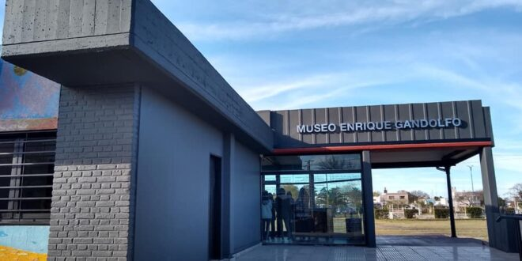
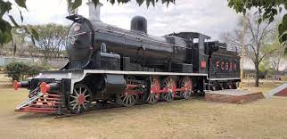
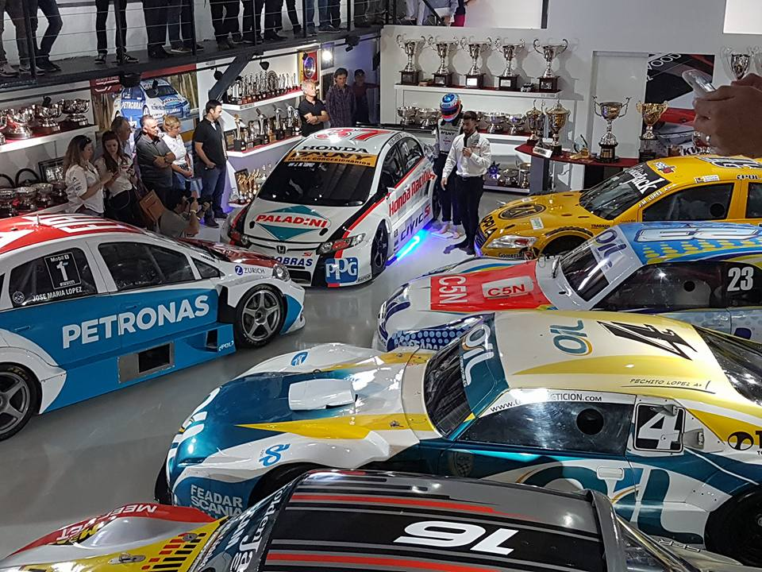

Circuitos Turisticos de Río Tercero
Preparate para dar un hermoso recorrido por la ciudad de Río Tercero, ubicada en la provincia de Córdoba.
Los principales destinos en esta hermosa ciudad son:
Museo Regional Florentino Ameghino
MAPS

Museo Regional Florentino Ameghino es una institución que posee dos funciones principales, por un lado, la preservación del patrimonio con el armado de colecciones, su estudio, clasificación, análisis
y catalogación para legar a las generaciones futuras; por otro lado, tiene una función educativa de divulgación y comunicación con los ciudadanos, que se lleva a cabo mediante las exposiciones.
Iglesia de Lourdes
MAPS

Iglesia construida a finales de la primera mitad del siglo XX e inaugurada en el año 1946. De importantes dimensiones, sobresale el mural de la Última Cena ubicado en el trasaltar. Un templo importante en Río Tercero.
Museo Enrique Gandolfo
MAPS

El Museo Enrique Gandolfo es una obra con la cual se restaura y da valor el edificio de la ex Estación de Trenes Ferrocarril Mitre, ubicado en calle Acuña entre calles Mitre y Alberdi.
Para ello se genera un nuevo espacio cultural a partir del cual se logra conservar y exhibir parte de nuestro patrimonio histórico.
Locomotora 681 Rio Tercero
MAPS

Locomotora a vapor clase C6a numero 681 y de rodado 2-8-0 , de esposición en la entrada de la estación Ferroviaria de Rio Tercero es la primera de 2 de las C6a , que se encuentran existentes en la Argentina .
La segunda , es la gemela 688 , la cual está en los almacenes de Perez , y sin Tender.
Museo PECHITO
MAPS

José María López, el piloto tricampeón del mundo, presentó en sociedad su Museo. Una obra que recorre la carrera de Pechito.